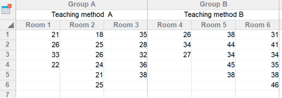
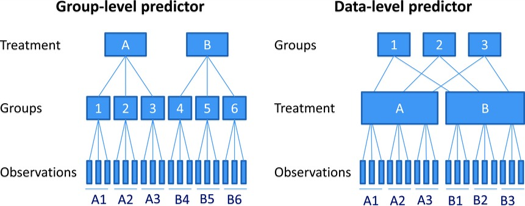
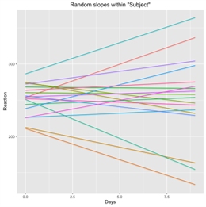
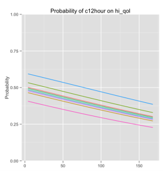
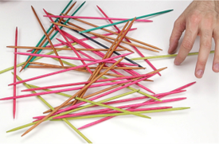
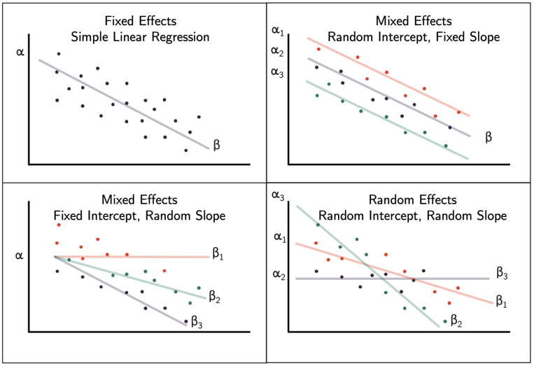
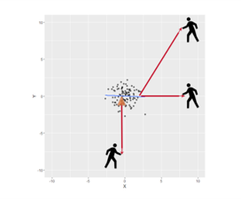
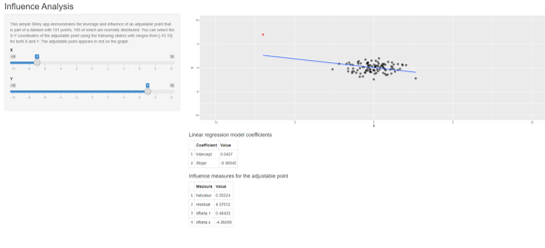

1. Introduction
Mixed Models
Statistics for CSAI II
Travis J. Wiltshire, Ph.D.
Outline
Mixed models, Multilevel models, random coefficient regression models, hierarchical linear modeling…
- What is it?
- Random Intercepts
- Random Slopes
- Assumptions
Quiz
Question 1
Results
1. Which of the following models shows polynomial regression?
Question 2
Results
2. Which of the following orders of polynomial regression should be used when you want to test for a cubic relationship between affect and stress?
Question 3
Results
3. Which of the following is TRUE about mixed models?
Multiple and Mixed Models
Multiple
\[Y_i=b_0+b_1X_2+b_2X_2+ ...+b_nX_n+\epsilon_i\] - One dependent variable Y predicted from a set of independent variables (\(X_1, X_2, …X_k\)) - One regression coefficient for each independent variable - \(R^2:\) proportion of variation in dependent variable Y predictable by set of independent variables (X’s)
Mixed
\[Y_i=b_{oj}+b_1X_{ij}+\epsilon_{ij}\]
\(b_{oj}=b_o+u_{oj}\)|Random intercept
\(b_{1j}=b_1+u_{1j}\)|Random slopes
- Can model hierarchical/nested/clustered data
- Groups, cohorts, schools, organizations, hospitals, etc.
- We can include fixed and random effects to predict an outcome variable
Data Types
- Nested Data
- Repeated Measures Data
- Longitudinal Data


Why should we use this?
- We can ‘ignore’ some of the assumptions of regression
- Homogeneity of regression slopes
- Model the variability in regression slopes
- Assumption of independence
- You can model the relationships between cases
- Regression for repeated observations
- Missing data
- MLMs can cope with missing data
Fixed vs random effects
Intercepts and slopes can be fixed or random
- In OLS regression they are fixed

Fixed coefficients
- Intercepts/slopes are assumed to be the same across different contexts

Random coefficients
- Intercepts/slopes are allowed to vary across different contexts

Fixed effects vs random effects

https://bookdown.org/steve_midway/DAR/random-effects.html#fixed-and-random-effects
Illuminating our error term ε
- These additional terms account for non-independence
- And things that were previously all relegated to ‘error’
- Now can become random effects
- E.g., differences due to subjects or certain question items, schools, groups, etc
Changes to R squared in mixed effects modeling
- \(R^2\) conditional
- Includes variance explained by fixed and random effects
- \(R^2\) marginal
- Includes only variance explained by fixed effects
Nakagawa, S., Johnson, P. C. D., & Schielzeth, H. (2017). The coefficient of determination R2 and intra-class correlation coefficient from generalized linear mixed-effects models revisited and expanded. Journal of The Royal Society Interface, 14(134), 20170213. doi: 10.1098/rsif.2017.0213
Interpreting Random Effects
Random effects
- Variance tells you how much variability between individuals in a group is explained relative to residual
- SD tells you about between-person differences within the group
- Corr – is correlation between slope and intercept
Interpreting Intraclass Correlation
Intraclass correlation
- Ratio of the random intercept variance (between-person) to the total variance, defined as the sum of the random intercept variance and residual variance (between + within).
- Correlation coefficient of observations in the same cluster
- Can tell you:
- If mixed model is even necessary (if ICC is near 0, maybe not)
- How much variation is explained due to clustering/grouping variable(s) - i.e., the random effects
- Compare how ICC changes with different changes to model
Running the model in R with random intercepts
- Load the
lme4package andlmerTestpackage - Using the
lmer()function we specify our modeloutcome ~ pred1 + (1|pred2)
- Where pred2 has multiple observations associated with some higher level group (e.g., participant, school, team)
- Pred2 also isn’t necessarily something we are interested in using as a predictor, but we know it is having some influence on our outcome and we want to ‘control’ for that
Exercise 1
Run a mixed model with random intercepts
- Load the
lme4andlmerTestpackages - Load the
politenessdata - Check out the politeness data set (get a summary, make some plots, etc.)
- Make a prediction about the relationship between attitude and vocal frequency
- Run a mixed effects model to predict vocal frequency from attitude
while allowing random intercepts for subject and scenario
- Remember to add these to the equation
(1|pred)
- Remember to add these to the equation
- Get \(R^2\) values using
performance()function - Generate and inspect the random intercepts using
coef(yourmodelhere) - Interpret the output
- Bonus: use
parameters::model_parameters()function to get standardized coefficients
Load packages and load politeness data
politeness <- read.csv("data/politeness_data.csv", header=TRUE)
## Load the lme4 and lmerTest packages
## Load the politeness data
##(stored in the data folder)
## Check out the politeness data set
## (get a summary, make some plots, etc.)summary(politeness)
#attitude - inf = informal
#attitude - pol = polite
#example scenarios include asking for a favor from a professor (polite) vs a peer (informal)Run a mixed effects model
## Make a prediction about the relationship between
## attitude and vocal frequency
## Run a mixed effects model to predict vocal frequency
## from attitude while allowing random
## intercepts for subject and scenario.
## Save your model in a variable called mod.2!
## Remember to add these to the equation (1|pred)
## Get r-squared values using `performance()` function
## Generate and inspect the random intercepts using `coef(yourmodelhere)`
## Interpret the output
## Bonus: use `parameters::model_parameters()` function to get standardized coefficientsmod.2<-lmer(frequency~attitude + (1|subject)+(1|scenario),data=politeness)
summary(mod.2)
performance(mod.2)
coef(mod.2)
summary(mod.2)Exercise 2
- Make a prediction about the relationship between attitude and vocal frequency and gender and vocal frequency
- Run a mixed effects model to predict vocal frequency from attitude
and gender while allowing random intercepts for subject and scenario
- Remember to add these to the equation (1|pred)
- Get \(R^2\) values using
performance()function - Generate the random intercepts using
coef(yourmodelhere) - Compare the 2 models using AIC, BIC, -2LL, ANOVA
- Interpret the output
- Bonus: use
parameters::model_parameters()function to get standardized coefficients
Repeat the same mixed model with random intercepts and a new predictor
## Make a prediction about the relationship between attitude and vocal frequency and gender and vocal frequency
## Run a mixed effects model to predict vocal frequency
## from attitude and gender while allowing random
## intercepts for subject and scenario
## Save your model in a variable called mod.3!
## Remember to add these to the equation (1|pred)
## Get R-squared values using performance() function
## Generate the random intercepts using coef(yourmodelhere)
## Compare mod.2 and mod.3 using AIC, BIC, -2LL, ANOVA
## Interpret the output
## Bonus: use parameters::model_parameters() function to get standardized coefficients#plot(politeness$frequency,politeness$gender)
boxplot(frequency~attitude*gender,col=c('white','lightgray'),politeness)
mod.3<-lmer(frequency~attitude + gender + (1|subject)+(1|scenario),data=politeness)
summary(mod.3)
performance(mod.3)
coef(mod.3)
anova(mod.2,mod.3)
compare_performance(mod.2,mod.3)
plot(compare_performance(mod.2,mod.3))Random slopes
Running the model in R with random intercepts and slopes
- Load the
lme4package andlmerTestpackage - Using the
lmer()function we specify our modeloutcome ~ pred + (1+pred|pred2)
- Telling R to expect the slope to vary for the fixed effect (pred) as a function of pred2
Comparing models
- Chi-Square test (using
anova()function) - AIC – Lower value is better model
- BIC – Lower value is better model
- Loglikelihood - Higher is better model
- Model 1 LL – Model 2 LL
- Conditional vs Marginal \(R^2\)
Exercise 3
Run a mixed model with random intercepts and slopes
- Run a mixed effects model to predict vocal frequency from attitude
and gender while allowing random intercepts for subject and scenario and
random slopes based on attitude
- Remember to add these to the equation (1+pred|pred2)
- Get \(R^2\) values using
performance()function - Generate the random intercepts and slopes using
coef(yourmodelhere) - Compare the 2 models
- Interpret the output
Run a mixed model with random intercepts and slopes
## Run a mixed effects model to predict vocal frequency
## from attitude and gender while allowing random intercepts
## for subject and scenario and random slopes based on attitude
## Save your model in a variable called mod.4!
## Remember to add these to the equation (1+pred|pred2)
## Get $R^2$ values using `performance()` function
## Generate the random intercepts and slopes using `coef(yourmodelhere)`
## Compare mod.3 and mod.4
## Interpret the output#Model with random intercepts and random slopes
mod.4<-lmer(frequency~attitude + gender+ (1+attitude|subject)+(1+attitude|scenario),data=politeness,REML=FALSE)
summary(mod.4)
performance(mod.4)
coef(mod.4)
anova(mod.3,mod.4)
plot(compare_performance(mod.3,mod.4))Perform additional statistics:
- Get \(R^2\) values using
performance()function - Generate the random intercepts and slopes using
coef(yourmodelhere) - Compare the 2 models
- Interpret the output
Perform additional statistics:
## Get R-squared values for mod.4 using the `performance()` function
## Generate the random intercepts and slopes for mod.4 using `coef(yourmodelhere)`
## Compare mod.3 and mod.4
## Interpret the outputperformance(mod.4)
coef(mod.4)
anova(mod.3,mod.4)
plot(compare_performance(mod.3,mod.4))Fixed or random?
- Rules of thumb for random effects
- Include random intercepts for all ‘control’ variables (subject ID, school, observation number, teamID, etc. )
- Only include random slopes that are interesting to test
- Maximal model with step down (to reduce Type 1 error rate)
- Maximal possible random slopes and intercepts if possible
- See also examples here: http://www.alexanderdemos.org/Mixed7.html#1_random_items_(stimulus)
Barr, D. J., Levy, R., Scheepers, C., & Tily, H. J. (2013). Random effects structure for confirmatory hypothesis testing: Keep it maximal. Journal of memory and language, 68(3), 255-278.
Assumptions
Assumptions
- Linearity and
homoscedasticityof the model - Normality of residuals
- Multicollinearity
- Influential data points
- Independence (What?)
- You could accidentally leave out an important dependency in your model.
Leverage and influence
- Leverage is a measure of how far an observation on the predictor variable (Let it be X) from the mean of the predictor variable. Its potential to influence the model results.
- http://omaymas.github.io/InfluenceAnalysis/
- https://omaymas.shinyapps.io/Influence_Analysis/


Exercise 4
Check your assumptions for mod.3
## Check the following for mod.3:
## Linearity and homoscedasticity of the model
## Normality of residuals#Check our assumptions for model 3
#Check linearity and homoscedasticity
plot(fitted(mod.3),residuals(mod.3), pch=20)
abline(a=0,b=0, lty=2)
hist(residuals(mod.3))
car::qqPlot(residuals(mod.3))Influential data points
- Try to
plot(hatvalues(mod.3))and see if there is a cut-off you would use to exclude the potentially influential values from the model
## The model is stored in a variable called mod.3#Check for values with high leverage and potential influence
require(ggplot2)
# https://omaymas.shinyapps.io/Influence_Analysis/
ggplot(data.frame(lev=hatvalues(mod.3),pearson=residuals(mod.3,type="pearson")),
aes(x=lev,y=pearson)) +
geom_point() +
theme_bw()Figure out a way to find that/those values from the dataset (in a new object) and re-run model without these points
## The model is stored in a variable called mod.3
## Save new model omitting cases with
## high leverage as mod.5# Get ids for values with 'high' leverage
levId <- which(hatvalues(mod.3) >= .15)
# Run the model with those data points excluded
# This is not really good science to simply omit these values based on leverage alone
mod.5<-lmer(frequency~attitude + gender+ (1|subject)+(1|scenario),data=politeness[-c(levId),])
summary(mod.5)
performance(mod.5)
coef(mod.5)
check_model(mod.5)Examples
Some example write ups of mixed models
- Wiltshire, T. J., Euler, M. J., McKinney, T. L., & Butner, J. E. (2017). Changes in Dimensionality and Fractal Scaling Suggest Soft-Assembled Dynamics in Human EEG. Frontiers in physiology, 8, 633.
- Paxton, A., Abney, D. H., Kello, C. T., & Dale, R. K. (2014,
January). Network analysis of multimodal, multiscale coordination in
dyadic problem solving. In Proceedings of the Annual Meeting of the
Cognitive Science Society (Vol. 36, No. 36).
- https://cloudfront.escholarship.org/dist/prd/content/qt7xz2z06w/qt7xz2z06w.pdf
- Baayen, R. H., Davidson, D. J., & Bates, D. M. (2008). Mixed-effects modeling with crossed random effects for subjects and items. Journal of memory and language, 59(4), 390-412.
- https://www.sciencedirect.com/science/article/pii/S0749596X07001398
- Peugh, J. L. (2010). A practical guide to multilevel modeling. Journal of school psychology, 48(1), 85-112.
Some additional resources
- https://seantrott.github.io/mixed_models_R/#Why_use_mixed_models
- https://rpsychologist.com/r-guide-longitudinal-lme-lmer
- (http://www.floppybunny.org/robin/web/virtualclassroom/stats/statistics2/articles/mixed_models/Introduction-to-LMER.pdf
- https://freshbiostats.wordpress.com/2013/07/28/mixed-models-in-r-lme4-nlme-both/http://davidakenny.net/papers/k&h/MLM_R.pdf
- Maximum Likelihood Estimation: https://youtu.be/XepXtl9YKwc
- McNeish, D., Stapleton, L. M., & Silverman, R. D. (2017). On the unnecessary ubiquity of hierarchical linear modeling. Psychological methods, 22(1), 114.
Conclusion
Thanks!
See you next week! Questions?